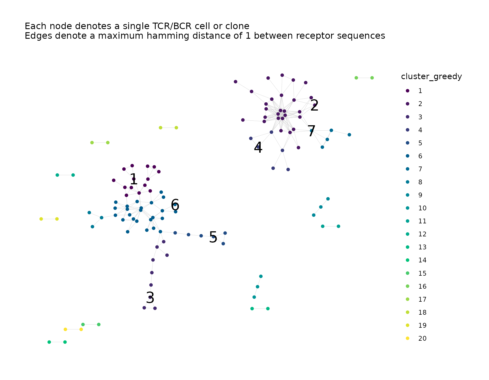
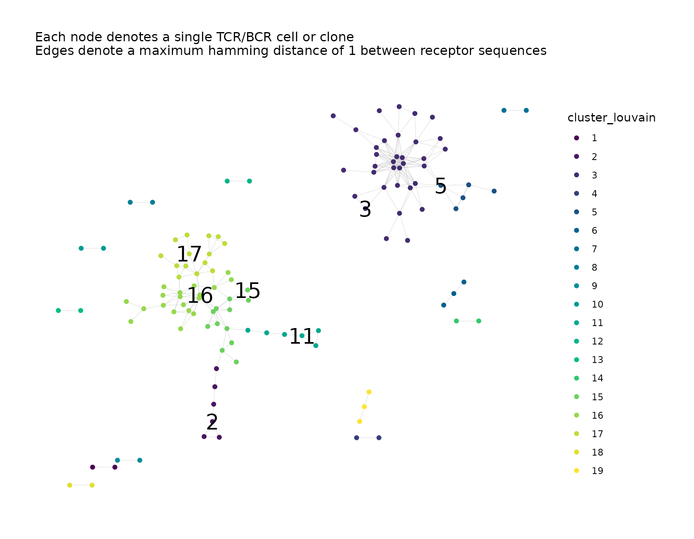

Introduction
Cluster analysis involves using a community-finding algorithm to partition the network graph into clusters (densely-connected subgraphs). These clusters represent groups of clones/cells with similar receptor sequences.
Cluster analysis can be performed when calling
buildRepSeqNetwork() by setting
cluster_stats = TRUE or as a separate step using
addClusterStats().
When performing cluster analysis, each cluster is assigned a numeric cluster ID, and the cluster membership of each node is recorded as a variable in the node metadata. Properties are computed for each cluster, such as total node count, mean sequence length, the sequence with the greatest network degree, and various centrality indices of the cluster’s graph. The cluster metadata for these properties is included as its own data frame contained in the list of network objects.
Simulate Data for Demonstration
We simulate some toy data for demonstration.
We simulate data consisting of two samples with 100 observations each, for a total of 200 observations (rows).
set.seed(42)
library(NAIR)
#> Welcome to NAIR: Network Analysis of Immune Repertoire.
#> Get started using `vignette("NAIR")`, or by visiting
#> https://mlizhangx.github.io/Network-Analysis-for-Repertoire-Sequencing-/
dir_out <- tempdir()
toy_data <- simulateToyData()
head(toy_data)
#> CloneSeq CloneFrequency CloneCount SampleID
#> 1 TTGAGGAAATTCG 0.007873775 3095 Sample1
#> 2 GGAGATGAATCGG 0.007777102 3057 Sample1
#> 3 GTCGGGTAATTGG 0.009094910 3575 Sample1
#> 4 GCCGGGTAATTCG 0.010160859 3994 Sample1
#> 5 GAAAGAGAATTCG 0.009336593 3670 Sample1
#> 6 AGGTGGGAATTCG 0.010369470 4076 Sample1
nrow(toy_data)
#> [1] 200Performing Cluster Analysis
With buildRepSeqNetwork()/buildNet()
Calling buildRepSeqNetwork() or its alias
buildNet() with cluster_stats = TRUE is one
way to perform cluster analysis.
net <- buildRepSeqNetwork(toy_data, "CloneSeq", cluster_stats = TRUE)With addClusterStats()
addClusterStats() can be used with the output of
buildRepSeqNetwork() to perform cluster analysis.
net <- buildNet(toy_data, "CloneSeq")
net <- addClusterStats(net)Results
Cluster Membership
After using either of the methods described above, the node metadata
now contains a variable cluster_id with the values for
cluster membership:
head(net$node_data$cluster_id)
#> [1] 20 3 4 2 2 4
#> Levels: 1 2 3 4 5 6 7 8 9 10 11 12 13 14 15 16 17 18 19 20Cluster Properties
The output list now includes an additional data frame
cluster_data containing the cluster metadata:
names(net)
#> [1] "details" "igraph" "adjacency_matrix" "node_data"
#> [5] "cluster_data" "plots"
nrow(net$cluster_data)
#> [1] 20
names(net$cluster_data)
#> [1] "cluster_id" "node_count"
#> [3] "mean_seq_length" "mean_degree"
#> [5] "max_degree" "seq_w_max_degree"
#> [7] "agg_count" "max_count"
#> [9] "seq_w_max_count" "diameter_length"
#> [11] "global_transitivity" "assortativity"
#> [13] "edge_density" "degree_centrality_index"
#> [15] "closeness_centrality_index" "eigen_centrality_index"
#> [17] "eigen_centrality_eigenvalue"
head(net$cluster_data[ , 1:6])
#> cluster_id node_count mean_seq_length mean_degree max_degree seq_w_max_degree
#> 1 1 14 13.00 3.36 9 AAAAAAAAATTGC
#> 2 2 28 12.96 8.43 18 GGGGGGGAATTGG
#> 3 3 9 12.67 2.22 4 AGAAGAAAATTC
#> 4 4 6 13.00 3.33 9 GGGGGGAAATTGG
#> 5 5 6 12.00 2.17 3 AGGGAGGAATTC
#> 6 6 25 12.00 4.60 10 AAAAAAAAATTGA brief description of each cluster-level property is given below:
-
node_count: The number of nodes in the cluster. -
mean_seq_length: The mean sequence length in the cluster. -
mean_degree: The mean network degree in the cluster. -
max_degree: The maximum network degree in the cluster. -
seq_w_max_degree: The receptor sequence possessing the maximum degree within the cluster. -
agg_count: The aggregate count among all nodes in the cluster (based on the counts incount_col, if provided). -
max_count: The maximum count among all nodes in the cluster (based on the counts incount_col, if provided). -
seq_w_max_count: The receptor sequence possessing the maximum count within the cluster. -
diameter_length: The longest geodesic distance in the cluster. -
assortativity: The assortativity coefficient of the cluster’s graph, based on the degree (minus one) of each node in the cluster (with the degree computed based only upon the nodes within the cluster). -
global_transitivity: The transitivity (i.e., clustering coefficient) for the cluster’s graph, which estimates the probability that adjacent vertices are connected. -
edge_density: The number of edges in the cluster as a fraction of the maximum possible number of edges. -
degree_centrality_index: The cluster-level centrality index based on degree within the cluster graph. -
closeness_centrality_index: The cluster-level centrality index based on closeness, i.e., distance to other nodes in the cluster. -
eigen_centrality_index: The cluster-level centrality index based on the eigenvector centrality scores, i.e., values of the principal eigenvector of the adjacency matrix for the cluster. -
eigen_centrality_eigenvalue: The eigenvalue corresponding to the principal eigenvector of the adjacency matrix for the cluster.
Abundance-Based Properties
Some cluster-level network properties, such as agg_count
and max_count, are only computed if the user specifies a
column of the input data containing a measure of abundance for each row
(e.g., clone count for bulk data or Unique Molecular Identifier count
for single-cell data). This column is specified using the
count_col function, which accepts a column name or column
index.
net <- buildNet(toy_data, "CloneSeq",
cluster_stats = TRUE,
count_col = "CloneCount"
)or:
net <- buildNet(toy_data, "CloneSeq")
net <- addClusterStats(net, count_col = "CloneCount")In case the data includes more than one count variable,
net$details$count_col_for_cluster_data specifies which of
these variables corresponds to the count-based cluster properties:
net$details$count_col_for_cluster_data
#> [1] "CloneCount"Clustering Algorithm
By default, clustering is performed using
igraph::cluster_fast_greedy(). Other clustering algorithms
can be used instead of the default algorithm. In
buildRepSeqNetwork() and addClusterStats(),
the algorithm is specified using the cluster_fun parameter,
which accepts one of the following values:
-
"fast_greedy"(default) "edge_betweenness""infomap""label_prop""leading_eigen""leiden""louvain""optimal""spinglass""walktrap"
For details on the clustering algorithms, see
?addClusterMembership().
net <- buildRepSeqNetwork(toy_data, "CloneSeq",
cluster_stats = TRUE,
cluster_fun = "leiden"
)It is possible when using addClusterStats() to specify
non-default argument values for optional parameters of the clustering
functions.
net <- buildRepSeqNetwork(toy_data, "CloneSeq")
net <- addClusterStats(net,
cluster_fun = "leiden",
beta = 0.02,
n_iterations = 3
)Cluster Membership Only
addClusterMembership() is similar to
addClusterStats(), but only adds cluster membership values
to the node metadata. It does not compute cluster properties.
net <- buildRepSeqNetwork(toy_data, "CloneSeq")
net <- addClusterMembership(net,
cluster_fun = "leiden",
beta = 0.02,
n_iterations = 3
)Multiple Instances of Clustering
Using addClusterMembership() or
addClusterStats(), it is possible to perform cluster
analysis with different clustering algorithms and record the cluster
membership from each instance of clustering.
When performing cluster analysis, the cluster_id_name
parameter specifies the name of the cluster membership variable added to
the node metadata. This allows the cluster membership values from each
instance of clustering to be saved under a different variable name.
# First instance of clustering
net <- buildRepSeqNetwork(toy_data, "CloneSeq",
print_plots = FALSE,
cluster_stats = TRUE,
cluster_id_name = "cluster_greedy"
)
# Second instance of clustering
net <- addClusterMembership(net,
cluster_fun = "louvain",
cluster_id_name = "cluster_louvain"
)
net <- addPlots(net,
color_nodes_by = c("cluster_greedy", "cluster_louvain"),
color_scheme = "Viridis",
size_nodes_by = 1.5,
print_plots = TRUE
)Currently, keeping cluster properties from multiple instances of
clustering analysis is not supported. addClusterStats() can
overwrite existing cluster properties using
overwrite = TRUE.
The details element of the network list helps with
keeping track of clustering results and cross-referencing the cluster
properties with the node properties.
net$details
#> $seq_col
#> [1] "CloneSeq"
#>
#> $dist_type
#> [1] "hamming"
#>
#> $dist_cutoff
#> [1] 1
#>
#> $drop_isolated_nodes
#> [1] TRUE
#>
#> $nodes_in_network
#> [1] 122
#>
#> $clusters_in_network
#> fast_greedy louvain
#> 20 20
#>
#> $cluster_id_variable
#> fast_greedy louvain
#> "cluster_greedy" "cluster_louvain"
#>
#> $cluster_data_goes_with
#> [1] "cluster_greedy"
#>
#> $count_col_for_cluster_data
#> [1] NA
#>
#> $min_seq_length
#> [1] 3
#>
#> $drop_matches
#> [1] "NULL"net$details$cluster_id_variable tells which cluster
membership variable corresponds to which clustering algorithm.
net$details$cluster_data_goes_with tells which cluster
membership variable corresponds to the cluster metadata.
Labeling Clusters
To more easily reference the clusters within a visual plot, clusters
can be labeled with their cluster IDs using
labelClusters().
The list of network objects returned by
buildRepSeqNetwork() is passed to the net
parameter. By default, all plots contained in the list
net$plots will be annotated, but a subset of plots may be
specified as a vector of the element names or positions to the
plots parameter.
The name of the cluster membership variable in the node metadata is
provided to the cluster_id_col parameter (the default is
"cluster_id").
By default, only the 20 largest clusters by node count are labeled in
order to preserve legibility. This number can be changed using the
top_n_clusters parameter.
Instead of ranking clusters by node count, a different criterion can
be used, provided the list net contains cluster properties
corresponding to the cluster membership variable. The name of a numeric
cluster property is provided to the criterion parameter.
The ranking order can be reversed using
greatest_values = FALSE.
The size of the cluster ID labels can be adjusted by providing a
numeric value to the size parameter (the default is 5), and
their color can be changed by providing a valid character string to the
color parameter.
# First instance of clustering
net <- buildNet(toy_data, "CloneSeq",
print_plots = FALSE,
cluster_stats = TRUE,
cluster_id_name = "cluster_greedy",
color_nodes_by = "cluster_greedy",
color_scheme = "Viridis",
size_nodes_by = 1.5,
plot_title = NULL
)
# Second instance of clustering
net <- addClusterMembership(net,
cluster_fun = "louvain",
cluster_id_name = "cluster_louvain"
)
net <- addPlots(net,
color_nodes_by = "cluster_louvain",
color_scheme = "Viridis",
size_nodes_by = 1.5,
print_plots = FALSE
)
# Label the clusters in each plot
net <- labelClusters(net,
plots = "cluster_greedy",
cluster_id_col = "cluster_greedy",
top_n_clusters = 7,
size = 7
)
net <- labelClusters(net,
plots = "cluster_louvain",
cluster_id_col = "cluster_louvain",
top_n_clusters = 7,
size = 7
)
net$plots$cluster_greedy
#> Warning: Removed 115 rows containing missing values (`geom_text()`).
net$plots$cluster_louvain
#> Warning: Removed 115 rows containing missing values (`geom_text()`).